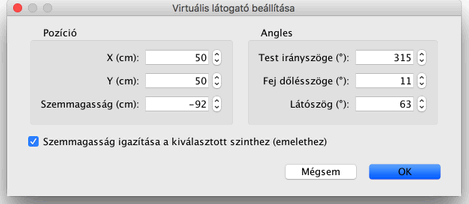
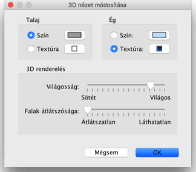

| 3D nézet módosítása | |||
Válassza a 3D nézet > Légi nézet vagy a 3D nézet > Virtuális látogatás menüpontot a 3D nézet két nézõpontja közti váltáshoz.
Ha a Légi nézetet választotta a 3D nézet egy felülnézeti képet fog adni otthonáról.
Ebben a módban ha a bal egérgomb nyomása mellett balra vagy jobbra mozgatja az egeret, az otthon a központban levõ függõleges tengely körül fog forogni. ; az egér elõre-hátra mozgatása a vízszintes tengely mentén forgatja el az otthont ;
az egérgörgõ mozgatása pedig kicsinyítést/nagyítást eredményez.
Ha a Virtuális látogatást választja, a látogató felülnézeti képe az Alaprajz nézetben is meg fog jelenni. Helyzete és szöge egyszerre változnak a 3D és az Alaprajz nézetekben a látogató mozgásakor. A látogató körül 4 mutató van.
|


|
Amikor az egérmutató a látogató egyik vállán van, megváltozik, és ekkor lehet módosítani a fej vagy test szögét, illetve a szemmagasságot. Amíg az egérgombot nyomva tartja, egy súgóbuborékban olvasható lesz a módosított szög értéke.  Ezen a panelen van lehetõség a látogató látószögének beállítására, továbbá arra, hogy a szemmagasság alkalmazkodjon az aktuális szinthez az épületben, eképpen lehetõvé téve hogy a látogató mozoghasson a szintek közt. Végül, a 3D nézet > Módosítás... menüpont megjeleníti a 3D nézet panelt, ahol beállíthatja a talaj és az égbolt színét vagy textúráját, a világosságot és a falak átlátszóságát.  |
|